|
Buffy/Mozilla: Mail: Address Book |
UI Specification
|
|
Address Book |
Last Modification: |
|
Author: Jennifer Glick |
Status: Implementable |
||||||||||
|
Quicklinks: Address Book Window |
Feature Team
Please post all comments and suggestions regarding this spec to the newsgroup, netscape.public.mozilla.mail-news. |
Note: Items in italics are not yet implemented.
The Address Book needs to be accessible to a broad range of users. It should be simple and accessible to Novice, Intermediate and Advanced users.
Basic Tasks
- Using the Address Book or Select Addresses Dialog to address a message (To, Cc, or Bcc)
- Viewing an individual card entry within the 3 pane mail Card View Pane or Card View Dialog
- Adding a new individual address book entry/card
- Editing an existing individual address book entry/card
- Deleting an existing individual address book entry/card
- Searching for an address using an LDAP directory
- Adding a Sender to a personal Address Book
- Synchronizing with a Netscape.com Web Address Book (Netscape only)
- Sorting AB using columns
- Sorting AB using "View", "Show Name as" menu.
Intermediate Tasks
- Adding all recipients to a personal Address Book
- Moving card entries from one personal Address Book to another
- Adding a new mailing list address book entry
- Editing an existing mailing list address book entry
- Deleting an existing mailing list address book entry
- Adding additional personal address books
- Performing an advanced LDAP directory search
- Adding and LDAP directory search result to a personal Address Book
- Modifying the Collected Addresses feature prefs
- Send email to a Secondary account
Advanced Tasks
- Synch with a hand held computer (Palm Pilot or other)
- Adding additional LDAP directories
Note: "Sync" feature is Netscape only.
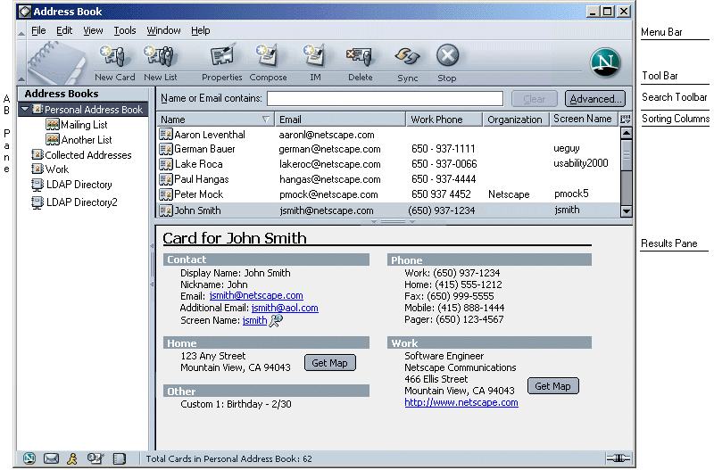
Access points for the Address Book Window and Address Selection Dialog:
|
Toolbar |
Menu |
Msg Context Menu |
|
"Address Book" button in Launcher area of Status bar. "Address" button on Toolbar of Mail Compose Window opens the "Select Addresses Dialog". |
"Tools" menu contains "Address Book". "File", "Select Addresses..." from the Mail Composition Window opens the "Select Addresses Dialog". |
(Right mouse click) |
|
Toolbar |
Menu |
Msg Context Menu |
Other |
|
"New Card", Address Book Window. "Edit" from Address Book window. |
"New Card..." from the "File" menu, Address Book Window. "Edit Card" from the "Edit" menu, Address Book Window. "Add Sender to Address Book..." from the "Message" menu, Open Message Window and Main Mail Window. "Add All to Address Book..." from the "Message" menu, Open Message Window and Main Mail Window. |
(Right mouse click) "Add Sender to Address Book...", message selected in the Main Messenger Window or from within the body of a message in the Open Message Window. "Add All to Address Book...", message selected in the Main Messenger Window or from within the body of a message in the Open Message Window. |
Double click on Address Book entry in the Address Book Window. "Add Sender to Address Book..." button within the message envelope area, Open Message Window. |
Tabbing order in the Address Book (same as Mail) is clockwise. Shift+Tab is counter clockwise. Ctrl+Tab jumps to the next major area, skipping the individual items within the area.
If the Sidebar is closed then the tab order is Address Book pane,
Quick Search text box, Clear button, Advanced button, Result Pane,
Card View pane, then back to the Address Book pane.
If the Sidebar is open then the tab order is Address Book pane, Quick
Search text box, Clear button, Advanced button, Result Pane, Card
View pane, Sidebar, then back to the Address Book pane.
The Address Book consists of three panes, the Address Books Pane, the Results Pane and the Card Pane. Users can move the separator bars between the panes to size the panes as desired. The window should remember how the panes were last resized by the user.
The Address Book Window is resizable and the window should remember how it was last resized as well as the order and sizing of column headers.
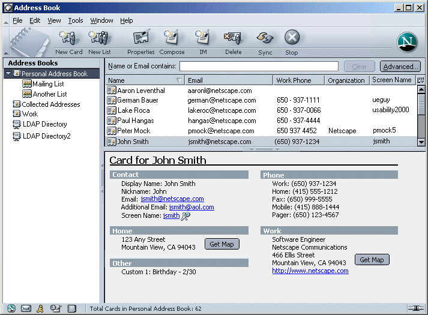
When the Address Book is first launch within a session, the Personal Address Book has focus. The top N (as many as there is room for) items are displayed in the Results Pane. The first item in the list is selected. When the Address Book is selected again within the same session, the list displays the entries the user was last viewing. For example, if the user selected a different Address book or an entry within an Address Book, this view should be displayed when the Address Book is again opened.
Drag and drop behavior parallels that of Mail. A drag and drop of a card entry from one Local AB to another Local AB is a Move. A Ctrl plus drag and drop is a Copy. A drag and drop from an LDAP directory to a Local AB is always a Copy. A drag and drop from a Local AB to an LDAP directory, or an LDAP directory to an LDAP directory is not permitted. The mouse cursor should provide correct visual feedback (Move cursor vs Copy cursor vs Not Available cursor).
Bug 101484. A Mailing List is selected in the left Address Book window pane. The user creates a New Card. The new card dialog should indicate that the new card will be added to the parent of the selected mailing list. Once the new card is complete, it is added to both the selected mailing list and the parent Address Book. It is immediately visible in the right pane which is displaying the contents of the selected mailing list. If the user had picked a different parent address book, the new card should appear in the selected Address Book only.
Bug 103689. An Address Book in the left pane has focus. The user initiates a New Message. The Compose window opens with the addressing area blank. A Mailing List in left pane has focus. The user initiates a New Message. The Compose window opens with the contents of the mailing list in address area.
The default for the Search Bar is open. Users can choose to close the bar by selecting: View --> Show/Hide --> Search Bar. The application should remember how the user last left the bar (open vs. close).
When a Local Address Book or LDAP Directory is selected in the left pane, the descriptive text on the Search Bar reads, "Name or Email contains:". For a Local AB, as the user types, (and after a given time delay of no additional input) the entries on the Results Pane are filtered to display only those entries that match what the user has typed. For an LDAP Directory, the user enters the criteria to be searched, and after a given time delay (of no additional input), the directory is searched and the results are displayed in the Results Pane. The "Stop" button in the Toolbar is enabled while the search is in progress. Status of the search is displayed in the Status bar.
The search bar performs a search based on Display Name, First Name, Last Name, and Email. If the user wants to perform a search on other criteria, they can perform an advanced search.
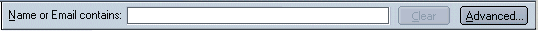
Selecting the "Advanced" button opens a dialog which allows users to perform a more detailed search. See Searching in the Address Book for more details.
"Clear" will clear the text field.
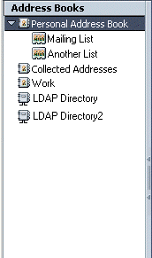The left side of the Address Book contains the Address Book pane.
The "Address Book" pane contains local address books, including the default "Personal Address Book" and the "Collected Addresses" (Email Address Collection feature) address books by default (CAB is pre NS7/Moz 1.1 only). Users are able to create additional Local Address Books as desired. Address Books can be expanded to display the mailing lists contained within them (if any).The "Personal Address Book" is the user's default Address Book. The AIM BuddyList is associated with this Address Book (Netscape only) and this is the Address Book that can be synched with the Netscape.net Web Address Book (Netscape only). Users can change the name of this Address Book, but it still remains flagged as the default Address Book. This address book can NOT be deleted.
LDAP Directories are also displayed in the left pane. They appear below the Local Address Books.
Actions
The Sidebar is closed by default in the Address Book. Using the View menu, users can make the sidebar visible. The sidebar can be used to display a variety of available content panels.
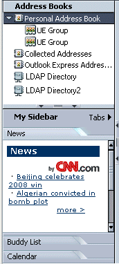
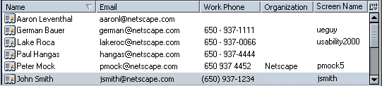
Selecting an Address Book in the "Local Address Book" area displays the contents of that Address Book in the top right pane (Results Pane).
When/if columns are moved very close to each other so that not all the data can be seen, the cut off data is appended with a "..." and there is always a gutter space of at least 10 pixels separating the columns of data. If data is not complete for a particular item, holding the mouse over the item should display the complete data within a Tittle Tip.
Users can decide how the entries displayed in the "Name" column appear in the Results Pane by using the "View -->Show Name as-->" menu. Choices include:
Selecting a particular View causes the entries in the "Name" column to be displayed appropriately. For example, if a user choose the View "Last, First" all entries in the "Name" column would be displayed as Last Name, First Name. When the AB is closed and reopened, it should remember the last view for which it was set.
If the user selects a View that is not available for a particular AB entry, the contents of the "Name" column for that entry is left blank. For example, the user chooses the View "Display Name" but removed the "Display Name" for a particular AB entry from the field in the Card Edit Dialog, nothing would be displayed for the particular entry for the "Name" column.
When a Mail message is sent, name information displayed in the Header of the message is based on the Display name selected by the user. If no Display name is available, the user's First and Last name are displayed.
Default columns, and column order, include: "Name" "Email", "Work Phone", "Organization", "Screen Name" (Netscape only).
Available columns include: "Name", "Email", "Work Phone", "Organization", "Screen Name" (Netscape only), "Nick Name", "Home Phone", "Fax", "Pager", "Mobile", "Additional Email", "Title" and "Department".
Users are able to size the columns by dragging the separator bar between column headers. Columns can be reordered by dragging and dropping the column headers.
The column size and order is sticky.
An additional column, "Screen Name", is available for Netscape builds only. The Screen Name column is used to display the Screen Name of a particular Address Book entry (if one has been entered). This is entered by the user using the "IM" tab on the Card Edit Dialog. Screen Name column can include a presence icon if the person is currently online.
Users should be able to sort on any column currently displayed in their Address Book. Clicking on a column causes the messages to be sorted by that column. Additional clicks cause the sorting to toggle between the available sorting states for that column (generally ascending and descending).
When the user clicks on a new column, it should always be sorted by ascending order first.
Mousing over a column causes a ToolTip to appear which explains the functionality of the column. "Click on this column to sort by <column name>".
Default sort is Name. Secondary sort is Email.
Clicking on the "Column Setup Widget" displays a flyout menu with a list of available columns. The ones displayed in the current view have checks next to them. Selecting an item from the menu will toggle its column's display.
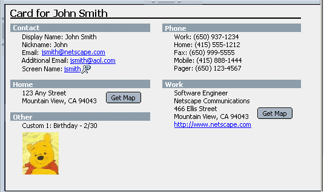
Note: Currently images can not be displayed in the the Notes field. :-(
Selecting an individual entry from the Results Pane, displays detailed information about the entry in the low right pane (Card Pane). The third pane is not directly editable but actions can be launched by clicking on links within the card.
The Card Pane can be collapsed by dragging the separator bar between the Results Pane and the Card Pane to the bottom of the AB window. The Card Pane can also be hidden using the View menu.
The Card Pane provides the users with an easy to read, quick summary of the information contained in a card. Fields which contain no data are not show. Data entry fields, with or without data, are not shown. Category headers (i.e., "Home Address") that do not have data included with any of their associated fields are not shown. This makes the information shown in the third pane less cluttered, more readable and easier to find the data that is important to the user. The user only sees the data that they chose to enter (instead of a bunch of empty text fields).
The "Card for <Name>" should match the name format (First Last, Last/First, Display Name) displayed in the "Name" column of the Results Pane.
Users can click directly on the primary or secondary email addresses to launch a mail message to that person (at the selected account). The text of the email address is a link. Users can click directly on a web page link to launch the web page in the browser (or their default browser). The text of the web page is a link. Users can launch an IM session by clicking on the IM screen name link (Netscape only).
The Notes field is an Ender field, so the user can add html formatting or pictures (gif, jpg or png) to a AB card. You could have a picture of the address book entry person within their entry/card. (Note: not sure if this is doable yet).
Get Map - Only appears if enough of an address is provided to display a map. Changes focus to Browser window and displays a map of the address. Default provider is MapQuest.
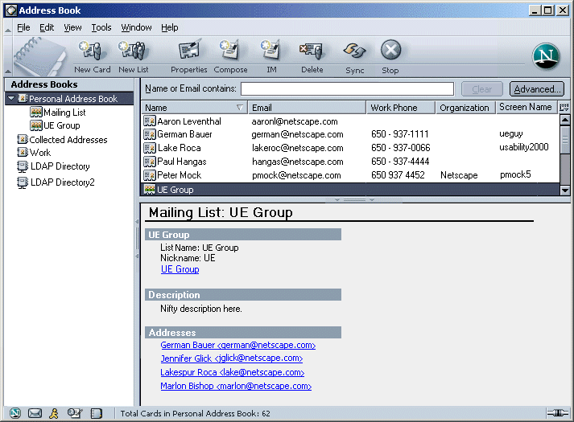
Non-editable Entries (Not currently implemented)
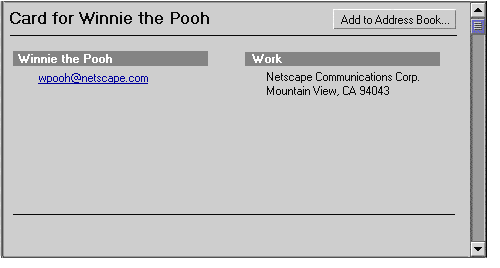
Entries from an LDAP Directory are NOT editable. A user can view a card entry from a Directory within the third pane, but these cards can not be edited. (Hence, the "Edit" menu item in the three pane Address Book should not be enabled when a non-editable entry is being viewed.)
The look of a non-editable card entry within the Card Pane is slightly different (potentially more muted) than an editable entry. This is to try and indicate to the user that this card is display only. A button, "Add to Address Book" will appear within the Card Pane so that users can add this entry to one of their personal address books and have the ability to edit the entry. Clicking on the "Add to Address Book" button would cause the New Card dialog to open pre-populated with the available data. The Personal AB is the default location.
If a user wants to edit a Directory entry, they must first move a copy to one of their local address books. This can be done by dragging and dropping it into a local address book or by clicking on the "Add to Address Book" button on the Card Pane.
The default for the Search Bar is open. Users can choose to close the bar by selecting: View --> Show/Hide --> Search Bar. The application should remember how the user last left the bar (open vs. close).
When a Local Address Book or LDAP Directory is selected in the left pane, the descriptive text on the Search Bar reads, "Name or Email contains:". For a Local AB, as the user types, (and after a given time delay of no additional input) the entries on the Results Pane are filtered to display only those entries that match what the user has typed. For an LDAP Directory, the user enters the criteria to be searched, and after a given time delay (of no additional input), the directory is searched and the results are displayed in the Results Pane.
The search bar performs a search based on Display Name, First Name, Last Name, and Email. If the user wants to perform a search on other criteria, they can perform an advanced search.
The throbber should be animated while a search is in progress.
While the search is in progress, the progress of the search is displayed in the status bar. Once the search is complete, the results of the search are displayed in the status bar: "X matches found".
The "Stop" toolbar button is enabled when an LDAP search is in
progress.
The "Advanced..." button opens the "Advanced Directory Search" window
which allows users to perform a more detailed search.
While search results are being displayed, the user should be able to perform all the regular Address Book functions such as:
Clicking on the "Advanced..." button in the Address Book window
Search Bar opens the "Advanced Directory Search" window. The
window is resizable.
The window is context sensitive. If a specific LDAP Directory or
Address Book is selected in the Address Book window when the
"Advanced" button is selected, the window opens with that Directory
or AB already selected.
Advanced searches cannot be performed on Mailing Lists. If a list is selected in left pane of the Address Book window and the user clicks "Advanced..." the Advanced AB Search dialog opens with the Parent AB of the list selected.
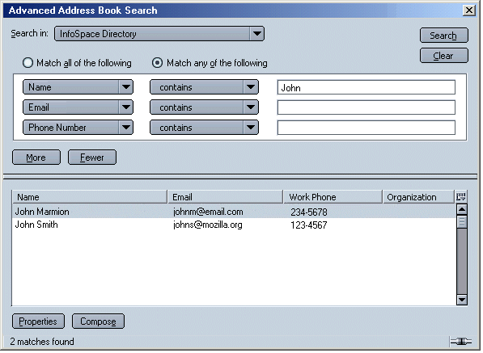
There is always at least one available search criteria row. When
creating a new search, only one search row with
widgets is displayed. When focus leaves the last criteria row
(clicking Enter, clicking out of row, tabbing out, etc.) and the row
is not empty, a new search criteria row with widgets is created. This
area will scroll when more than 3 criteria rows are needed. The
number of potential search criteria rows is unlimited.
The "Search" button changes to "Stop" when a search is in progress so that a user can stop the current search if they want.
When a search is currently in progress, the progress bar in the status bar is animated and the progress of the search is displayed in the status bar. Once the search is complete, the results of the search are displayed in the status bar: "X matches found".
Once the search has completed, the results of the search are
displayed in the lower half of the dialog. The Results Thread Pane
works identical to the Mail Thread Pane. Header columns can be
added/removed. Results can be sorted by header columns. The default
sort order is Name (A's at the top), but the dialog should remember
the user's last settings. Ctrl and Shift keyboard commands are
available to select multiple items
Status Bar - Once the search is complete, the number of results is
displayed ("X matches found").
If no matching search results are found the statusbar should display
the text "No matches found".
In the AB, or Advanced AB Search, if a directory is selected and the user tries to use Quick Search or perform a search, and the ldap dir can not be reach, we should display text to that fact in the Card Pane/Results area. "Unable to connect to the LDAP directory <name>. Verify that your settings for this directory are correct or else try again later."
|
The |
Of the Contact |
Third Field |
|
Name (First, Last or Display) |
contains is less than |
Text Field |
|
The |
Of the Contact |
Third Field |
|
Name |
contains |
Text Field |
Currently, actions available on results of a search include:
Future Enhancements: Possibly add an Edit, Delete, New Msg, Move to a different AB buttons.
When a user adds a new address book card or modifies an existing card, the "Card Edit " dialog is used. This dialog is a set of tabs in which the user can enter information about a contact. The Card Dialog is modal. This dialog is NOT resizable by the user. As the user enters text in the First and Last name fields, the Display field is automatically filled in (First Last).
The most important information and frequently accessed information (Name Info, Email Info, Phone Info) is available to the user on the first "Name" tab.
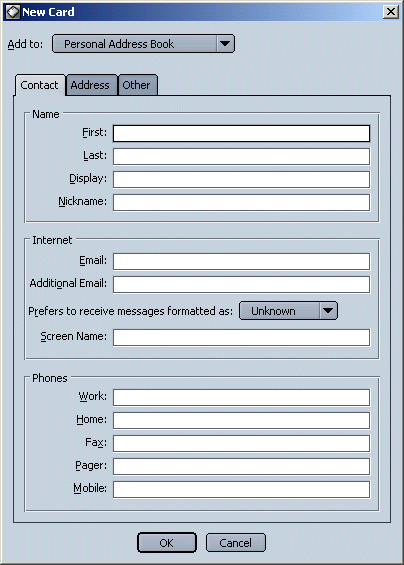
Home and Business address information as well as web page information can be added to the "Address" tab.
The "Web Page:" text field areas (Home and Work) on the "Address" tab, contain the default text "http://". This helps the user understand what type of information goes in this field and is most likely the way the address they will enter will begin. If the user pastes an address into this field the "http:" should not be duplicated. If the user enters a web address in either of these fields, it should be displayed appropriately in the Card View pane under "Home" or "Work". If a user does not enter a web address in one or both of these fields, the "http://" text should NOT appear in the Card View pane.
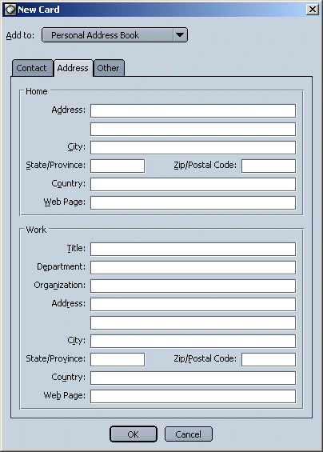
The "Other" tab allows the user to enter 4 custom data fields. The Notes field is an Ender widget. The user can enter html and/or graphics (gif, jpg, png) to this field. Not currently implemented.
OR
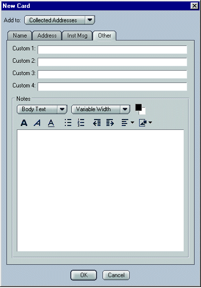
Note: When editing an Existing AB card/entry (versus a New card) the "Add Card to:" drop down menu is not available and is replaced with static text "Location: Name of AB".
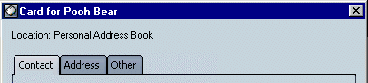
The "Address Selection" dialog is used to select addresses when composing a mail message. It is accessible from the Mail Compose window only, by clicking on the "Address" button on the Toolbar or from the menu "File -> Select Addresses...".
Users select one or more entries in the results pane and clicks the "To", "Cc" or "Bcc" buttons to add the recipients. Double clicking on a card entry also adds the person to the "To" list.
This dialog is resizable and sticky. Panes within the dialog are moveable and sticky. The Address Selection Dialog is modal (to the Compose window). Users are still able to create a new card or edit an existing card from this dialog (the Card Edit Dialog becomes modal to the Select Addresses dialog in this case).
Default columns are: "Name" and "Email". Users are able to size the columns by dragging the separator bar between column headers. Columns can be reordered by dragging and dropping the column headers. The column size and order is sticky.
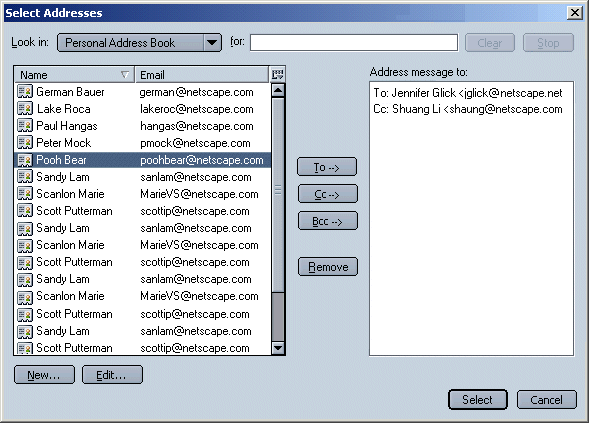
If the user selects an LDAP directory, the text "Type name to search for here" should appear (in a slightly grayed color) in the search text edit field. When an LDAP directory is selected, the Results Pane remains empty. This may confuse users.
If no matches are found for an LDAP directory search, the "No Matches Found" text should appear in the Results Pane as well as the Status Bar so that it is more visible to users (who often ignore the Status Bar). Is this doable?
If a user is frequently sending email to the same group of people, a Mailing List provides an easy way for users to send mail to that group of recipients without having to add each recipient to a Mail Composition window. Once a Mailing List has been set up, the user needs only to type the name or nickname of the Mailing List within the addressing area of a Mail Composition window and the Mailing List name is added to the message (auto complete). Upon send, the message is sent to all AB entries in the Mailing List.
Mailing Lists are associated with a particular Address Book and are displayed within the Address Book Window as a sub-item of a particular Address Book. The default Address Book is the "Personal Address Book". Mailing lists can be associated with the "Collected Addresses" AB.
A card must be in a user's Address Book to be added to a Mailing List (associated with that AB). If a user adds an entry to a mailing list who is not already in the user's address book, a card for that entry is automatically added to the user's address book. If a card is deleted from an Address Book it is automatically deleted from any associated Mailing Lists. If an address is removed from a Mailing List, and their is also a card in one of the user's local Address Books, the card is NOT removed.
Future: The Mailing List Dialog is modeless. User must be able to drag and drop between the Address Book and this dialog. Currently, the ML dialog is modal to the AB. Issues in Bug 128124 (edit/new address list dialog should be modal) need to be addressed in order to make the ML dialog modeless.
This dialog is resizable and should remember the it's last size and location.

When the Mailing List dialog is opened, it should default to a location just off the side of the Address Book, if possible (instead of on top of the AB), so that drag and drop from the AB to the Mailing List dialog is easier. Otherwise, users must reposition the Mailing List or AB before they can drag and drop.
Users can reorder Mailing List recipients by highlighting a recipient and using the Up and Down buttons, or they can use the "card" icon to drag and drop the recipient to a new location in the List.
When creating a new Mailing List, the name of the dialog should be "New Mailing List". When opening an existing Mailing List, the name of the dialog should be "Mailing List: <List Name>". When opening an existing Mailing List, "Add to:" and drop down selection list should be replaced with the static text "Location: <Name of Address Book>".
Entries in a Mailing List are displayed and appear in a mail message in the order in which they were added to the mailing list. We discussed the possibility of giving users the ability to VIEW their mailing lists alphabetically or by order added. But, when mail is sent to a mailing list, recipients will always be displayed in the mail message in the order they were added regardless of how the user choose to view the entries. Since order in which addresses are displayed in a message is very important to certain people (signifies a level of importance), it was thought that it might be deceiving to users if they could see their mailing list in alphabetical order, but weren't aware that the order in the sent message would be different.
A mailing list name must be unique to its Address Book Mailing lists appear in the left pane under their parent Address Book.
|
Available Feature |
|
Auto complete in a Mailing List |
|
Add, Edit and Delete entries in a Mailing List |
|
Add, Edit and Delete Mailing Lists |
|
D/D from the AB to the Mailing List dialog |
|
D/D from the AB to the Compose window |
|
D/D a Card from the AB to another AB |
|
To Be Added Feature |
|
D/D a Mailing List from one AB to another AB |
|
Reordering of Mailing List entries |
|
From the AB, D/D a card from an AB onto a closed Mailing List |
|
Mailing List Status Bar |
|
Mailing List Stop Button |
If a Local Address Book has focus and the "Properties" button is selected, or the Edit: Address Book Properties" menu item is selected, the Address Book Name dialog opens. Used to edit the name of an Address Book.

Note: If a user creates a New Address Book, the name of this dialog is "New Address Book" by default.
If an LDAP server has focus and the "Properties" button is selected, or the Edit: Server Properties" menu item is selected, the Directory Server Properties dialog opens. Used to edit the properties of an LDAP server. This dialog is accessible from the Address Book and the Preferences: Addressing panel.

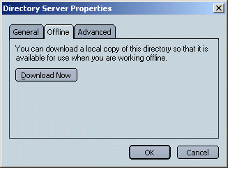

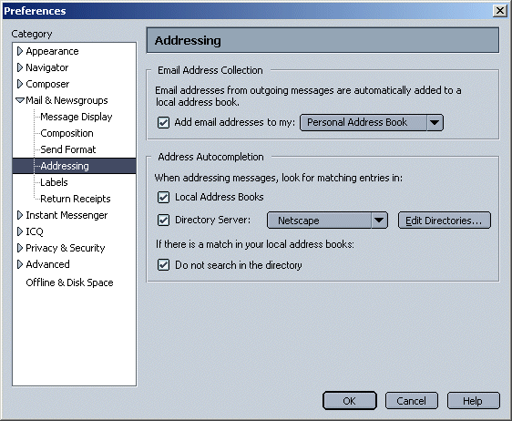
The Preference, "If there is a match in your local address books: Do not search in the directory" is only enabled if both the "Local Address Books" and "Directory Servers" checkboxes above are checked.
The "Edit Directories" button opens the "LDAP Directory Servers" dialog. All directories displayed here are used for autocomplete and are displayed in the user's Address Book window.

OR

"Add" or "Edit" opens the "Directory Server Properties" dialog.
Netscape feature only. If a user has a Netscape.net account, their "Personal Address Book" can be synchronized with their Netscape Web Address Book. If a user add/edit/deletes an entry in either Address Book, the results should be reflected in both Address Books after the synch.
Users may have multiple Netcenter WebMail accounts and hence multiple Netcenter Address Books, as well as multiple client side Address Books, but in the current time frame, we will only allow users to synch one set of adress books.
Email Address Collection is a feature which gathers the names and/or email addresses from messages which the user has received or sent and stores them in a specified Address Book, the "Collected Addresses" AB.
Note: Post NS7/Moz 1.1, the "Collected Addresses" AB is no longer the default. The PAB is the default but users can choose which AB they want to collect to. Also, only outgoing email addresses are collected by default.
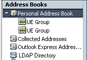
It is intended that this feature will provide convenience for people who want addresses automatically added to an Address Book, or for people who want to contact someone who once sent them email but for which they do not remember a specific name/address.
The "Collected Addresses" AB should behave the same as any other address book.
Using the Preferences panel, the user can turn the Email Address Collection feature off completely, or can customize it's behavior.
Address Book Window
Two additional columns available in the Address Book include, "Screen Name" and "Presence" (not currently implemented). "Screen Name" displays an entry's IM screen name if available. Only entries for which a screen name has been supplied are displayed. "Presence" (IM Graphic) is an icon which displays the online status of AB entry (only is a screen name has been supplied for the entry).
Presence information (icon) is shown only for people who are on your BuddyList. Hence, people in a user's Address Book with a designated Screen Name but who are not on the user's BuddyList, will not show presence information. No icon is displayed for people who are not on the user's BuddyList.
Potential presence states include: signing on, signing off, idle, online and away.
Potential future additions:
Please see Address Book menus spec.